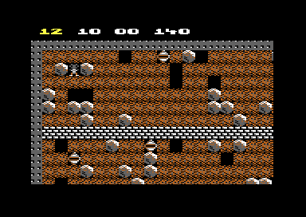
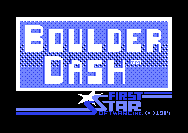

<meta charset="utf-8">
<meta name="viewport" content="width=device-width, initial-scale=1">
<title>{{title}}</title>
<link rel="preconnect" href="https://fonts.googleapis.com">
<link rel="stylesheet" href="https://fonts.googleapis.com/css2?family=Lato:wght@400;700;900&family=IBM+Plex+Mono:wght@400;500&display=swap">
<style>
:root{
  --bg:#23262d; --paper:#e9e7e1; --surface:#ffffff; --surface-2:#f1efea; --line:#d5d3cc; --line-soft:#e0ded8;
  --ink:#2f3136; --ink-soft:#55585f; --ink-mute:#80838a;
  --link:#1f5fa8; --link-hover:#154480; --accent:#1f5fa8;
  --amber:#c25a00; --cyan:#1f5fa8; --coral:#d04a3a; --green:#2a8a4a; --violet:#4a5bd6; --hl:#fff0c2;
  --chip:#2f3136; --chip-ink:#ffffff;
  --c64blue:#40318d; --c64grey:#686868;
  --fd:'Lato',system-ui,sans-serif; --fb:'Lato',system-ui,sans-serif; --fm:'IBM Plex Mono',ui-monospace,Menlo,monospace;
  --col:1080px; --gx:68px; --fs:17px; --lh:1.6; --hw:900; --h1:46px; --h2:26px; --sy:48px; --pp:26px; --r:10px;
  --plate-shadow:0 1px 2px rgba(0,0,0,.05),0 4px 14px rgba(0,0,0,.05);
}
*{box-sizing:border-box}
html{background:var(--bg);min-height:100%}
body{background:var(--paper);color:var(--ink);font-family:var(--fb);font-size:var(--fs);line-height:var(--lh);max-width:var(--col);margin:0 auto;min-height:100vh;padding:0 0 4rem}
h1,h2,h3{font-weight:var(--hw);letter-spacing:-.01em;text-wrap:balance;color:var(--ink);margin:0}
.wrap{padding:0 var(--gx)}
.hero{padding:48px var(--gx) 8px;text-align:left}
.eyebrow{font-family:var(--fm);font-size:12px;letter-spacing:.08em;text-transform:uppercase;color:var(--ink-mute);margin:0 0 10px}
.hero h1{font-size:var(--h1);line-height:1.15;letter-spacing:-.02em;margin:0 0 14px}
.hero .sub{margin:0 0 .6em;color:var(--ink-soft)}
section{padding:var(--sy) 0 24px}
section:last-of-type{border-bottom:none}
.fig{font-family:var(--fm);font-size:12px;letter-spacing:.08em;text-transform:uppercase;color:var(--ink-mute);margin:0 0 10px}
h2.t{font-size:var(--h2);margin-bottom:12px}
.lede{color:var(--ink-soft);margin:0 0 30px}
.plate{background:var(--surface);border:1px solid var(--line);border-radius:var(--r);padding:var(--pp);box-shadow:var(--plate-shadow)}
.cap{font-size:14px;color:var(--ink-mute);margin-top:14px;line-height:1.55}
.cap b{color:var(--ink);font-weight:700}
code{font-family:var(--fm);font-size:.82em;background:var(--chip);color:var(--chip-ink);border-radius:4px;padding:2px 6px;overflow-wrap:break-word;-webkit-box-decoration-break:clone;box-decoration-break:clone}

</style>
<style>
.bd-fig{margin:18px 0}.bd-fig img{max-width:100%;height:auto;image-rendering:pixelated;border:1px solid var(--line);border-radius:6px}
.bd-fig figcaption{font-size:14px;color:var(--ink-mute);margin-top:8px}
.bd-row{display:flex;flex-wrap:wrap;gap:12px;align-items:center;margin:0 0 14px}
.bd-row label{font-size:14px;color:var(--ink-soft)}
.bd-row select,.bd-row button{font:inherit;padding:6px 10px;border:1px solid var(--line);border-radius:6px;background:var(--surface);color:var(--ink)}
.bd-row button{cursor:pointer}
canvas.bd-cv{width:100%;max-width:960px;image-rendering:pixelated;border:1px solid var(--line);border-radius:6px;background:#000;display:block}
.bd-legend{display:grid;grid-template-columns:repeat(auto-fill,minmax(210px,1fr));gap:8px 16px;margin:14px 0 0;padding:0;list-style:none;font-size:14px}
.bd-legend li{display:flex;gap:8px;align-items:center}.bd-legend canvas{width:32px;height:32px;image-rendering:pixelated;background:#000;border:1px solid var(--line)}
table.bd-t{border-collapse:collapse;width:100%;font-size:15px}table.bd-t th,table.bd-t td{border-bottom:1px solid var(--line-soft);padding:6px 8px;text-align:left;vertical-align:top}
table.bd-t th{font-size:13px;color:var(--ink-mute);text-transform:uppercase;letter-spacing:.05em}
.bd-wrap{overflow-x:auto}
sup.fn{font-size:.7em;line-height:0}sup.fn a{text-decoration:none}
</style>

<!-- tabs -->
<header class="hero">
  <p class="eyebrow">{{year}} · {{publisher}}</p>
  <h1>{{title}}</h1>
  <p class="sub">Dig out the diamonds, dodge the falling rocks, and leave before the time runs out.</p>
</header>
<main class="wrap">
<section id="game">
  <p class="fig">01 · The game</p>
  <h2 class="t">A miner who digs for diamonds under falling rocks</h2>

  <p>Rockford is a tunnelling digger. Each screen is a cave full of dirt, with boulders balanced in it and diamonds buried between them. To finish a cave the player must dig out enough diamonds before the clock runs out and then reach the exit, which stays shut until the quota is met.<sup class="fn"><a href="about.html#src-2" title="C64-Wiki, Boulder Dash">2</a></sup></p>
  <figure class="bd-fig"><figcaption>Cave A, level 1. The line of numbers at the top is the diamonds needed, the value of each diamond, the diamonds collected so far, and the time. Rockford is at the top left, beside a boulder.</figcaption></figure>
  <p>The danger is the cave itself. Digging out the dirt under a <a href="gameplay.html#rocks">boulder or diamond</a> makes it fall, and anything it lands on is crushed, Rockford included. Two kinds of <a href="gameplay.html#creatures">creature</a> prowl the tunnels, and a patch of <a href="gameplay.html#amoeba">amoeba</a> in some caves spreads until it fills them.</p>
  <p>The game has <a href="levels.html">sixteen caves, A to P</a>, each in five difficulty levels, with a short bonus cave after every fourth.<sup class="fn"><a href="about.html#src-3" title="ZZAP!64 issue 1 on GameBase64">3</a></sup> The <a href="controls.html">controls</a> are one joystick and a few function keys.</p>
</section>
<section id="makers">
  <p class="fig">02 · The people behind the game</p>
  <h2 class="t">Two Canadians, a Forth prototype, and a conversion</h2>

  <p>Boulder Dash was created by the Canadian developers Peter Liepa and Chris Gray. Liepa had approached a publisher, Inhome Software, which put him in touch with Gray, who had written a game in BASIC based on the 1982 arcade game <i>The Pit</i>. Liepa wrote the expanded game in Forth in about six months, then rewrote it in 6502 assembly once it looked worth releasing, and took it to First Star Software when Inhome did not follow it up.<sup class="fn"><a href="about.html#src-1" title="Wikipedia, Boulder Dash (video game)">1</a></sup></p>
  <p>The Commodore 64 version published by First Star in 1984 is a conversion of Liepa's Atari 8-bit game.<sup class="fn"><a href="about.html#src-1" title="Wikipedia, Boulder Dash (video game)">1</a></sup> None of the sources read names the programmer of the conversion, and the game shows no credits of its own apart from the title screen's “(C)1984 First Star Software Inc.”</p>
  <figure class="bd-fig"><figcaption>The title screen. The tune it plays is <a href="music.html#tune">played back on the Music tab</a>.</figcaption></figure>
</section>
<section id="reception">
  <p class="fig">03 · Reception</p>
  <h2 class="t">Called “perhaps the most addictive game ever”</h2>

  <p>The first issue of <i>ZZAP!64</i>, in May 1985, put Boulder Dash in its list of the top 64 games and called it “perhaps the most addictive game ever,” singling out “16 very different multi-screen caves and five very different levels.”<sup class="fn"><a href="about.html#src-3" title="ZZAP!64 issue 1 on GameBase64">3</a></sup> Writing in <i>Ahoy!</i> in April 1986, a reviewer described the “fascinating” Commodore 64 version as “an entertainment classic” with “lots of delightful touches.”<sup class="fn"><a href="about.html#src-4" title="Ahoy! April 1986">4</a></sup> In autumn 1993 <i>Commodore Force</i> placed it seventeenth in its top 100 Commodore 64 games.<sup class="fn"><a href="about.html#src-5" title="Commodore Force, Autumn 1993">5</a></sup></p>
  <p>Sources on other platforms are left out here. The game also inspired the whole genre of games built on rocks and diamonds, including <i>Repton</i> and <i>Emerald Mine</i>.<sup class="fn"><a href="about.html#src-1" title="Wikipedia, Boulder Dash (video game)">1</a></sup></p>
</section>
<section id="hidden">
  <p class="fig">04 · What is hidden</p>
  <h2 class="t">Odd things inside the program</h2>

  <p>The caves are never random from play to play, because each level of each cave carries its own seed, as the <a href="levels.html#recipe">Maps tab</a> shows. The title tune lies inside the character set in the program file (<a href="discoveries.html#tune-bytes">Discoveries</a>). The disk's single file starts with a short copier that moves the whole game to a new address before it runs (<a href="discoveries.html#copier">Discoveries</a>). The <a href="discoveries.html#open">open questions</a> list what could not be explained.</p>
</section>

</main>
<footer style="margin:16px 0 0;padding:22px var(--gx) 0;border-top:1px solid #e0ded8;font-family:'IBM Plex Mono',ui-monospace,Menlo,monospace;font-size:12px;color:#80838a"><a href="https://github.com/gamesexplained/gamesexplained" style="color:#1f5fa8;text-decoration:none">GitHub</a> · <a href="https://discord.gg/3V9GWyRDWV" style="color:#1f5fa8;text-decoration:none">Discord</a><br>© Games Explained contributors. Write-ups, facts and symbol maps are available under <a href="https://creativecommons.org/licenses/by-sa/4.0/" style="color:#1f5fa8;text-decoration:none">CC BY-SA 4.0</a>; code under <a href="https://opensource.org/licenses/MIT" style="color:#1f5fa8;text-decoration:none">MIT</a></footer>
